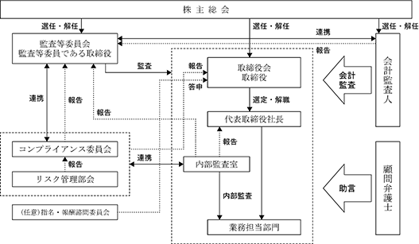

(注)発行済株式は、権利内容に何ら限定のない当社における標準となる株式であります。
該当事項はありません。
該当事項はありません。
③ 【その他の新株予約権等の状況】
該当事項はありません。
該当事項はありません。
(注) 株式分割（１：２）によるものであります。
2024年１月31日現在
(注) １．「金融機関」の中には、株式給付信託(ＢＢＴ)の信託財産として、株式会社日本カストディ銀行(信託Ｅ口)が所有している当社株式998単元が含まれております。
２．自己株式27,476株は、「個人その他」に274単元、「単元未満株式の状況」に76株含まれております。
３．当社は、2023年７月18日開催の取締役会の決議に基づき、2023年９月１日付で普通株式１株につき２株の株式分割を行っております。
2024年１月31日現在
(注) ㈱日本カストディ銀行(信託Ｅ口)の所有株式数99,800株は、みずほ信託銀行㈱が同行に委託した株式給付信託(ＢＢＴ)の信託財産であります。
なお、当該株式は、財務諸表においては自己株式として処理しております。
2024年１月31日現在
(注) １．「完全議決権株式(その他)」には、「株式給付信託(ＢＢＴ)」制度に関する株式会社日本カストディ銀行(信託Ｅ口)が所有する当社株式が99,800株(議決権998個)含まれています。
２．「単元未満株式」欄の普通株式には、当社所有の自己株式76株が含まれております。
2024年１月31日現在
(注) 株式給付信託(ＢＢＴ)が所有する当社株式99,800株につきましては、上記自己株式等に含まれておりませんが、財務諸表においては自己株式として処理しております。
当社は、2018年４月26日開催の株主総会決議に基づき、2018年６月25日より、取締役(業務執行取締役に限る。以下同じ。)に対する業績連動型株式報酬制度として「株式給付信託(ＢＢＴ)」(以下、「ＢＢＴ制度」という。)を導入しております。
ＢＢＴ制度の導入に際し、「役員株式給付規程」を新たに制定しております。当社は、制定した「役員株式給付規程」に基づき、将来給付する株式を予め取得するために、信託銀行に金銭を信託し、信託銀行はその信託された金銭により当社株式を取得しております。ＢＢＴ制度は、「役員株式給付規程」に基づき、取締役にポイントを付与し、そのポイントに応じて、取締役に株式を給付する仕組みです。
本制度の導入に伴い、当社は、2018年６月25日付けで51,800千円を拠出し、株式会社日本カストディ銀行(信託Ｅ口)が当社株式を35,000株、51,800千円取得しております。また、当社は、2022年１月６日付けで31,500千円を追加拠出し、株式会社日本カストディ銀行(信託Ｅ口)が当社株式を16,400株、31,397千円取得しております。今後信託Ｅ口が当社株式を取得する予定は未定であります。
取締役を退任した者のうち「役員株式給付規程」に定める受益者要件を満たす者
該当事項はありません。
該当事項はありません。
(注)１．当期間における取得自己株式数には、2024年４月１日からこの有価証券報告書提出日までの単元未満株式の買取りによる株式は含まれておりません。
２．当事業年度における取得自己株式の株式数には、2023年９月１日付で普通株式１株につき２株の割合で株式分割したことによる増加株式数36株が含まれております。
(注) １．当期間における取得自己株式には、2024年４月１日からこの有価証券報告書提出日までの単元未満株式の買取りによる株式は含まれておりません。
２．当事業年度及び当期間の保有自己株式数には、株式給付信託(ＢＢＴ)の信託財産として、株式会社日本カストディ銀行(信託Ｅ口)が保有する株式99,800株は含まれておりません。
当社は、利益配分につきましては、財務体質の強化と将来の事業拡大に必要な内部留保、利益見通し等を勘案した上で、配当政策を決定してまいります。
当社は、期末配当の年１回の剰余金の配当を行うことを基本方針としており、これらの剰余金の配当の決定機関は、期末配当については株主総会であります。
当事業年度の配当につきましては、上記方針に基づき当期は１株当たり10円の普通配当の配当を実施することを決定しました。
内部留保資金につきましては、収益性の一層の向上を図るため、新規店舗及び改装に伴う設備資金として有効活用してまいります。
当社は、「取締役会の決議により、毎年７月31日を基準日として、中間配当を行うことができる。」旨を定款に定めております。
なお、当事業年度に係る剰余金の配当は以下のとおりであります
(注) 配当金の総額には、株式会社日本カストディ銀行(信託Ｅ口)が保有する当社株式に対する配当金998千円が含まれております。
当社は、事業の成長やそのステージに合わせ、有効かつ効率的なコーポレート・ガバナンスを行うことで、株主をはじめお客様や従業員及び取引先、更に地域社会など全てのステークホルダーにとって企業価値を長期的・継続的に高めることが、重要な課題であると考えております。具体的には、経営判断の迅速かつ的確な意思決定を図るなか、経営の透明性・健全性を維持するために、監査等委員会監査、内部監査体制の強化、適切なＩＲ活動を通じて、コーポレート・ガバナンスを機能させてまいります。
当社の企業統治の体制といたしましては、監査等委員会設置会社であり、監査等委員には現在３名を選任しており、３名全員が社外取締役であります。
・取締役会
経営上の最高意思決定機関である取締役会は、社内の事情に精通した社内取締役５名、社外取締役１名及び監査等委員３名で構成されており、法令及び定款で定められた事項のほか、経営に関する重要事項について報告、決議しております。監査等委員も毎回出席して、必要に応じて意見の陳述を行っております。取締役会は毎月１回定期的に開催するほか、それ以外にも必要に応じて随時開催し、重要事項の決定に際し的確な経営判断がなされるよう運営しており、現在の体制において十分に経営の監視機能は保たれていると判断しております。
取締役会議長：代表取締役社長 一由聡
構成員：取締役 山岡正、一由聡、荒谷健一、太田真介、大島正一、社外取締役 南畑泰道
監査等委員である社外取締役 坂本尚幸、斉藤世司典、渡辺剛
・監査等委員会
監査等委員は監査等委員会を定期的に開催し、取締役会の適正運営を確認する等、取締役の業務執行を監督するとともに、監査等委員間の意見交換及び意思統一を図っております。また、法律上の判断を必要とする場合には顧問弁護士より適宜専門的なアドバイスを受けられる体制を整えております。会計監査人であります清明監査法人からは、会計上の課題についても適宜指導・助言を受けております。
監査等委員会委員長：坂本尚幸
構成員：監査等委員である社外取締役 坂本尚幸、斉藤世司典、渡辺剛
・(任意)指名・報酬諮問委員会
取締役会の任意の諮問機関である指名・報酬諮問委員会は、代表取締役会長及び独立社外取締役３名で構成されており、経営陣幹部・取締役の指名、報酬、報酬体系などについて十分に審議を行い、取締役会に答申しております。
指名・報酬諮問委員会委員長：山岡正
構成員：取締役 山岡正、監査等委員である社外取締役 坂本尚幸、斉藤世司典、渡辺剛
なお、当社における企業統治体制を図で示すと以下のとおりであります。

③ 取締役会及び任意に設置する委員会の活動状況
・取締役会
当事業年度において、当社は取締役会を17回開催しており、個々の取締役の出席状況については以下のとおりであります。
（注）木村敏彦氏は、2023年４月27日開催の第30回定時株主総会終結の時をもって、取締役を退任されるまでの期間における出席状況であります。
取締役会における具体的な検討状況は、法定の審議事項の他、以下のとおりであります。
予実管理等各種指標の状況
各種計画（事業、資金、出店）
リスク管理、コンプライアンスの状況、内部統制
その他、当社の経営や事業に関する各種課題への対応
・(任意）指名・報酬諮問委員会
当事業年度において、当社は任意の指名・報酬諮問委員会１回開催しており、４名の委員全てが参加しております。
任意の指名・報酬諮問委員会における審議内容は、以下のとおりであります。
取締役会決議事項である、当社の取締役及び代表取締役の選解任案
代表取締役の後継、育成計画
取締役の報酬決定方針
企業価値の持続的な向上を図るインセンティブとして機能する業績連動報酬体系の整備
その他、取締役会が必要と認めた事項
④ 企業統治に関するその他の事項
当社の内部統制システム、リスク管理体制につきましては、取締役会にて決議された以下の内部統制システムの基本方針に基づき、体制を構築しております。
食を通じて、人と地域社会をつなぐ企業へ 全てのお客様に喜んでもらい、「お客様」「社会」「社員」に必要とされる企業であり続ける
・企業行動規範及び組織規程、職務権限規程、職務分掌規程において定められた責任及び権限に則り職務を遂行する。
・取締役及び従業員が法令及び定款を遵守することはもとより、経営理念を実現するために「行動指針」と「８つの使命」を定めて実践する。
・法令違反行為等に関する通報に対して適切に対処するため、「社内通報制度運用規程」を制定し、従業員の社内通報・連絡・相談窓口を設置・運用する。
・取締役会の監督機能の維持・向上のため、社外取締役を選任する。
・監査等委員会は、独立した立場から内部統制システムの整備・運用状況を含め、「監査等委員会監査等基準」及び「監査計画」に従い、取締役の職務執行状況を監査する。
・内部監査室は、法令、定款及び諸規程等に基づき適切な業務が行われているか定期的に監査を行い、取締役会に報告する。
・コンプライアンス意識の徹底・向上を図るため、取締役及び従業員を対象とした、コンプライアンスの基本や業務上必須な情報管理等に関する研修を実施し、継続的な教育・普及活動を行う。
・人事総務部は、取締役の職務の遂行に係る稟議書、取締役会等の意思決定に係る重要情報について、「稟議規程」「文書取扱規程」等に基づき、速やかに閲覧が可能な状態かつ適切な方法で保存・管理する。
・当該情報に係る「稟議規程」「文書取扱規程」他諸規程については、必要に応じて適宜見直しを行い、改善を図る。
・総合的なリスク管理体制については、コンプライアンス委員会を定期的に開催しリスク管理全般について企画、検討、実行を行うほか、同委員会の下部組織としてリスク管理部会を設置し定期的に開催しており、業務プロセス上等において重大なリスクが発見された場合は、コンプライアンス委員会へ具申することとする。
・個別のリスク管理については、災害、事故、トラブル等に迅速に対応出来るよう、店舗、エリア、本部間の緊急連絡網を整備し、「危機管理マニュアル」を全店舗に備え付け、緊急時の対応に備えることとする。更に、不測の事態が発生した場合には、顧問弁護士を含む外部アドバイザーに対し連絡、相談等が可能な体制としているほか、緊急事態対策室をコンプライアンス委員会内に発足させることとする。
・内部監査室が定期的にリスク管理項目についての監査を行い、取締役会及び監査等委員に報告する。
・「取締役会規程」を遵守し、取締役は取締役会においてその業務執行に関して報告を行うことで相互に牽制・チェック体制を保ち、経営上の重要事項については企業倫理・コンプライアンスを意識して取締役会で決議する。
・「取締役会規程」に定められている要付議事項については、事前に十分な資料を準備して、取締役会に付議することを遵守する。
・経営計画に基づく各部門の目標と責任を明確化するとともに、予算と実績の差異分析を通じて所期の業績目標の達成を図る。
・必要に応じ、人事総務部と内部監査室は監査等委員からの調査の委嘱を受け、監査等委員の職務を補助しており、職務の遂行上必要な場合、監査等委員が使用人を取締役から独立させて業務を行うよう指示出来る体制とする。
・監査等委員補助使用人の取締役からの独立性を確保するため、監査等委員補助使用人は取締役の指揮、命令を受けないものとし、当該期間中の任命、異動、評価、解任等については監査等委員の同意を得る。
・監査等委員は、重要な意思決定の過程及び業務の執行状況を把握するため、取締役会を中心に出席する。また、必要に応じて一切の社内会議に出席する権限を持つ。
・監査等委員の要請に応じて、取締役及び使用人は、事業及び内部統制の状況等の報告を行い、内部監査室は内部監査の結果を報告する。
・取締役及び使用人は、業務または財務に重大な影響を及ぼす恐れのある法律上または財務上の諸問題や重大な法令・定款違反及び不正行為の事実など、緊急の案件が発生した場合には、遅滞なく監査等委員へ報告する。
監査等委員への報告を行った取締役及び使用人に対し、当該報告をしたことを理由として不利な扱いを行うことを禁止し、「内部通報規程」で定める通報者の保護に基づき、当該報告をした者の保護を行う。
監査等委員が、その職務を執行する上で発生する費用を請求した場合は、監査等委員の職務の執行に必要でないと認められた場合を除き、速やかに処理する。
・社外取締役として、可能な限り企業経営に精通した経験者・有識者や公認会計士等の有資格者を招聘し、代表取締役社長や取締役等、業務を執行する者からの独立性を保持する。
・社長は、当社の対処すべき課題や監査上の課題について、監査等委員会と定期的に意見交換を行う。
・監査等委員は、内部監査室と緊密な連携を保ち、必要に応じて、内部監査室に調査を依頼することができる。
当社は、財務報告の信頼性を確保するため、経理規程類を整備するとともに、「財務報告に係る内部統制の整備に関する基本方針」を定め、財務報告において不正や誤謬が発生するリスクを管理し、予防及び牽制機能を整備・運用・評価し、不備があれば是正していく体制を整備する。
・当社は、「企業行動規範」及び「反社会的勢力対応規程」において、反社会的勢力に対して一切関係を持たずいかなる利益供与も行わないことを明記する。
・適宜、外部機関を利用して取引先企業の情報調査を行い、反社会的勢力・団体に該当するかどうかのチェックを行う。
当社の取締役(監査等委員である取締役を除く。)は10名以内、監査等委員である取締役は５名以内とする旨を定款に定めております。
当社は、取締役の選任決議について、議決権を行使することができる株主の議決権の３分の１以上を有する株主が出席し、出席した株主の議決権の過半数の決議によって行なう旨定款に定めております。また、取締役の選任決議は、累積投票によらないものとする旨定款に定めております。
当社は、会社法第454条第５項の規定により、取締役会の決議によって毎年７月31日を基準日として、中間配当を行うことができる旨定款に定めております。これは、株主への機動的な利益還元を可能にするためであります。
当社は、会社法第165条第２項の規定により、取締役会の決議をもって、自己の株式を取得することができる旨を定款に定めております。これは、経営環境の変化に対応した機動的な資本政策の遂行を可能とするため、市場取引等により自己の株式を取得することを目的とするものであります。
当社は、取締役会の決議をもって会社法第423条第１項の行為に関する取締役(取締役であった者を含む)の責任を法令の限度において免除することができる旨定款に定めております。これは、取締役および監査役が職務を遂行するにあたり、その能力を十分に発揮して、期待される役割を果たしうる環境を整備することを目的とするものであります。
当社と各取締役及び各社外取締役は、当社定款及び会社法第427条第１項の規定に基づき、会社法第423条第１項の損害賠償責任を限定する契約を締結しております。当該契約に基づく損害賠償責任の限度額は、会社法第425条第１項に定める額としております。
当社は、会社法第430条の３第１項の規定に基づく役員等賠償責任保険契約を保険会社との間で締結し、被保険者が負担することとなる役員等がその職務の執行に関し責任を負うことまたは当該責任の追及に係る請求を受けることによって生じることのある損害を当該保険契約により補填することとしております。当該保険契約の被保険者の範囲は取締役であり、保険料は全額当社が負担しております。
当社は、会社法第309条第２項に定める株主総会の特別決議要件について、議決権を行使することができる株主の議決権の３分の１以上を有する株主が出席し、出席した株主の議決権の３分の２以上をもって行う旨定款に定めております。これは、株主総会における特別決議の定足数を緩和することにより、株主総会の円滑な運営を行うことを目的とするものであります。
男性
(注) １．取締役南畑 泰道、坂本 尚幸、斉藤 世司典及び渡辺 剛は、社外取締役であります。
２．2024年４月26日就任後、１年以内に終了する事業年度のうち最終のものに関する定時株主総会の終結の時までとなります。
３．2024年４月26日就任後、２年以内に終了する事業年度のうち最終のものに関する定時株主総会の終結の時までとなります。
４．監査等委員会の体制は、次のとおりであります。
委員長 坂本 尚幸 委員 斎藤 世司典 委員 渡辺 剛
当社の社外取締役は４名であります。
社外取締役のうち１名は税理士資格、１名は司法書士資格を有しており、税法や法令等に精通しているため、会社法以外の遵法性についてもチェック出来る体制になっております。
社外取締役南畑泰道氏は、㈱八十二銀行調査役であります。社外取締役坂本尚幸氏は、SCCコンサルティング株式会社の代表取締役であります。社外取締役斉藤世司典氏は、株式会社オーバルマネジメント代表取締役及びオーバル税理士法人の代表社員であります。社外取締役渡辺剛氏は、NTS総合司法書士法人社員であります。４氏と当社との間に人的関係、資本的関係又は取引関係その他の利害関係はありません。
当社は社外取締役の独立性に関する基準や方針は明確に定めておりませんが、選任にあたりましては、社外取締役の専門的かつ客観的な視点や、意見具申は有用であると考えており、これまでの経歴や幅広い見識から独立的な立場で当社の経営監視が出来る人材を求める方針としております。
監査等委員は、月１回の定例取締役会に出席し、経営上の重要事項についての報告を受けております。また、毎月１回定期的に監査等委員会を開催して監査等委員間の意見交換及び意思統一を図っております。
当社は、経営の意思決定機能と、業務執行を管理監督する機能を持つ取締役会に対し、監査等委員である取締役を全員社外取締役とすることで、今後更に経営への監視機能を強化してまいります。コーポレート・ガバナンスにおいては、外部からの客観的かつ中立の経営監視の機能が重要と考えており、社外取締役による監査が実施されることで、外部からの経営監視機能が十分に機能する体制が整ったものと考えております。
なお、監査等委員会は内部監査室及び会計監査人と相互連携を密にしており、内部監査室とは内部統制評価等を始めとした情報共有を適宜行うとともに、リスク管理活動の状況等について内部統制部門から定期的に報告を受けております。また、会計監査人とは監査計画・監査報告等を含めた連携を定期的に行っており、監査等委員会監査の充実を図っております。
(3) 【監査の状況】
監査等委員には３名を選任しており、全員が社外取締役であります。毎月１回定期的に監査等委員会を開催して監査等委員間の意見交換及び意思統一を図っております。また、必要に応じて内部監査室や会計監査人とも情報交換を行い、監査等委員会監査機能の充実に努めております。また、必要に応じ、人事総務部と財務経理部及び内部監査室は監査等委員会から調査の委嘱を受け、監査等委員の職務を補助しております。
なお、監査等委員の斉藤世司典氏は、税理士の資格を有し、財務及び会計に関する相当程度の知見を有しております。
当事業年度において、当社は監査等委員会を原則月１回開催しており、個々の監査等委員の出席状況は以下のとおりであります。
監査等委員会における主な検討事項として、取締役会運営の手続や内容の適正性及び妥当性等の審議を行ったほか、会計監査人との監査状況の確認、内部監査部門の今後の監査方針の共有などが挙げられます。
監査等委員の活動として、監査等委員監査計画の立案及び店舗監査、内部監査部門や取締役との定期的な面談等を行い、日常的な業務執行状況の監督業務を行っております。
当社では社長直属の独立機関として内部監査室を設置しており、現在は室長１名体制であります。内部監査室では、規程に則り監査計画を策定して、会社の業務活動が適正・効率的に行われているかを監査しております。また、効率的な監査を行うため、監査等委員会とも監査結果について情報を共有するとともに、取締役会の機能を発揮する観点から、内部監査室より取締役会に対して適切に直接報告を行う、デュアルレポーティング体制を採用しており、連携強化に努めております。
清明監査法人
12年間
指定社員 業務執行社員 北倉 隆一
指定社員 業務執行社員 島貫 幸治
当社の会計監査に係る補助者は、公認会計士３名であります。
当社の監査等委員会は、公益社団法人日本監査役協会が公表している「会計監査人の評価及び選定基準策定に関する監査役等の実務指針」に基づき、監査実績を踏まえた上で会計監査人を総合的に評価し、選定について判断しております。清明監査法人は、これらの観点において十分に評価できるものと考え選定いたしました。
また、会計監査人が会社法第340条第１項各号のいずれかに該当する状況にあり、かつ改善の見込みがないと判断した場合のほか、会計監査人が職務を適正に遂行することが困難と認められる場合には、監査等委員全員の同意に基づき、会計監査人を解任いたします。この場合、監査等委員は、解任後最初に招集される株主総会におきまして、会計監査人を解任した旨と解任の理由を報告いたします。
当社の監査等委員及び監査等委員会は、上記の会計監査人の選定方針に加え、公益社団法人日本監査役協会が公表している「会計監査人の選解任等に関する議案の内容決定権行使に関する監査役の対応指針」を参考として、会計監査人からの監査計画、監査の実施状況の報告を踏まえ、総合的に評価を行っております。当事業年度における監査法人の評価については、上記選定方針や監査の実績を踏まえ相当であると評価いたしました。
該当事項はありません。
該当事項はありません。
当社では、監査法人と協議した上で、当社の規模・業務の特性等に基づいた監査日数・要員数等を総合的に勘案して決定しております。
監査等委員会は、会計監査人の監査計画の内容、会計監査の職務遂行状況等を総合的に検討し、また過去の報酬実績も参考にして、会計監査人の報酬等の額について同意いたしました。
(4) 【役員の報酬等】
当社は、以下の通り取締役の報酬等の内容の決定に関する方針を定めております。
取締役の報酬は、企業価値の持続的な向上を図るインセンティブとして十分に機能するよう株主利益と連動した報酬体系としております。
取締役の基本報酬は、月額の固定報酬とし、役位、職責、在任年数等に応じて総合的に勘案して決定しております。また、業績連動の非金銭報酬の株式給付信託は、2018年４月26日開催の第25回定時株主総会決議に基づき、2018年６月25日より、当社取締役(監査等委員である取締役、及びそれ以外の取締役のうち社外取締役である者を除く)に対して、中長期的な業績向上と企業価値の増大に貢献する意識を高めることを目的とし、業績連動型株式報酬制度「株式給付信託(ＢＢＴ(＝Board Benefit Trust))」を導入しており、毎年決算時にポイントを計上しております。ポイントは業績指標を反映したものとし、経常利益の業績計画の達成度合いにより変動するものとしております。その理由は成長投資や株主還元の原資として分りやすい指標であるためです。
提出日現在において、これらの支給枠に基づく報酬等の支給対象となる役員は、取締役(監査等委員である取締役を除く。)５名であります。
監督機能を担う、監査等委員である取締役の報酬は、その職責に鑑み基本報酬のみとしております。
提出日現在において、これらの支給枠に基づく報酬等の支給対象となる役員は、監査等委員である取締役３名であります。
個人別の報酬については、第25回定時株主総会で取締役(社外取締役及び監査等委員である取締役を除く)は年額300百万円以内、監査等委員である取締役は年額100百万円以内と決議いただいており、その範囲内で代表取締役会長の原案を任意の指名・報酬諮問委員会に諮問し答申を得ることとし、その原案を取締役会にて決議することとしております。
また、取締役会は、当事業年度に係る取締役の個人別の報酬等について、報酬等の内容の決定方法及び決定された報酬等の内容が、決定方針に基づいて代表取締役会長が業績を俯瞰し原案が作成され、任意の指名・報酬諮問委員会において討議されたものであり、当該決定方針に沿うものであると判断しております。
(注) 取締役(監査等委員及び社外取締役を除く)に対する非金銭報酬の内訳は、業績連動報酬6,312千円であります。
報酬等の総額が１億円以上である者が存在しないため、記載しておりません。
該当事項はありません。
(5) 【株式の保有状況】
当社は、専ら株価の変動又は株式に係る配当によって利益を受けることを目的とする投資株式を「純投資目的である投資株式」に区分し、それ以外の目的で保有する投資株式を「純投資目的以外の目的である投資株式」に区分しております。なお、当社は純投資目的の投資株式を原則保有しないこととしております。
当社は、中長期的な企業価値向上の観点から、取引先との安定的・長期的な関係維持・強化等を目的とし、政策保有株式を保有しております。
個別の政策保有株式の保有の合理性については、保有意義の再確認や、保有に伴う便益等が当社の企業価値の向上に質するか等を取締役会において総合的に検証しており、保有の意義が乏しいと判断される銘柄については、売却または縮減を検討することとしております。
ｂ．銘柄数及び貸借対照表計上額
特定保有株式
(注) １．各社株式の保有の合理性は、取締役会において個別の政策保有株式について政策保有の意義を総合的に検証しております。
２．機密保持契約等の観点から、個別銘柄ごとの定量的な保有効果は非公開としておりますが、取引関係維持・強化、事業活動の円滑化が図られております。
みなし保有株式
該当事項はありません。
該当事項はありません。
該当事項はありません。
該当事項はありません。